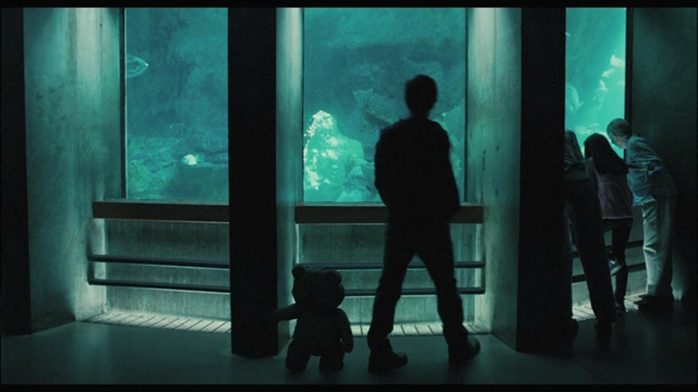

S
Сильные стороны
- 10 эфиров и 26 ч 20 м практики за период
- Лучший эфир 10.09 собрал 20 просмотров
- Есть два вертикальных игровых видео для нарезки
TWITCH REPORT / 16.08 — 14.10.2026
Когда катка закончилась,
а статистика осталась.
01 / CORE OVERVIEW
Десять эфиров из предоставленных карточек Twitch Analytics. Игры — Dota 2 и другие; постоянного расписания пока нет.

2 ч 08 м в эфире · 6 уникальных зрителей · 3 участника чата.
«20 просмотров. Голливуд уже звонит.»
Складывать уникальных зрителей разных эфиров нельзя: один человек мог приходить несколько раз. Поэтому 107 — это просмотры прямых трансляций, а охват двух 30-дневных периодов показан отдельно.
02 / THE NUMBERS MOVE
Переключи показатель и нажми на столбик: это данные конкретного эфира, а не выдуманная кривая роста.
Два последовательных 30-дневных отчёта Twitch. Сумма их длительностей отличается от суммы карточек отдельных эфиров на 4 минуты; здесь для общего итога использованы карточки эфиров.
03 / EPISODE LIST
Открой эфир, чтобы увидеть полный набор показателей. Сортировка и поиск работают прямо на странице.
AVG в карточках Twitch округлён до целого. Дата относится к началу эфира; некоторые трансляции завершались после полуночи.
04 / DIRECTOR'S NOTES
Сильные и слабые стороны основаны на твоих данных. Возможности и риски — выводы для следующего месяца, а не доказанные причины изменений.
05 / BEHIND THE SCENES
Ниже — два реальных вертикальных видео из твоих файлов. Видео можно открыть и посмотреть прямо здесь.
На Twitch за десять показанных эфиров аналитика отмечает один созданный клип. Два приложенных MP4 — отдельные исходные видео; я не приписываю их конкретным датам эфиров без подтверждения.
КЛИПЫ НА TWITCH ↗10 индивидуальных скриншотов Twitch Analytics и два общих 30-дневных отчёта, переданные автором.
Скрин OBS и публичная ссылка Canva не были предоставлены. Их место не заполнено вымышленными материалами.